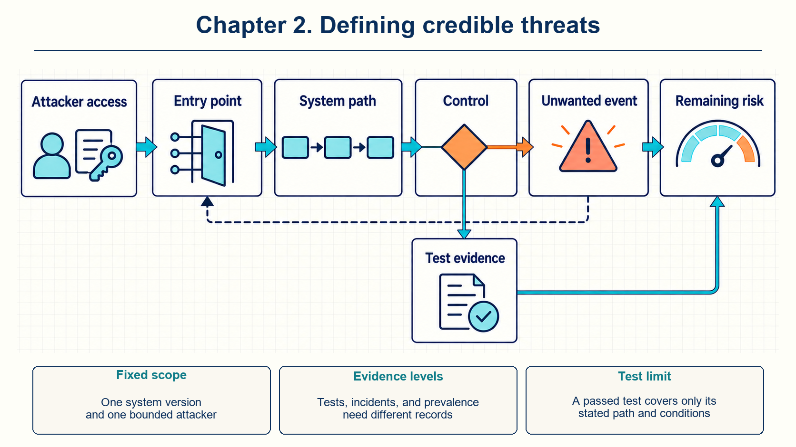
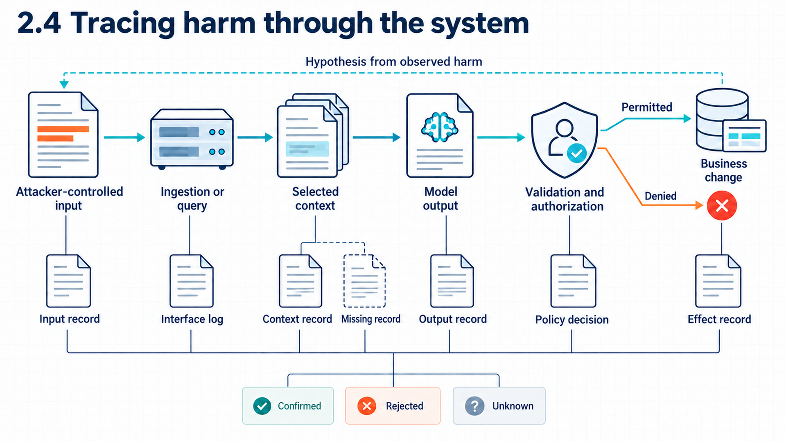

2 Mapping threats and controls
A threat record connects an attacker’s access to a possible failure, the controls expected to prevent it, and the evidence needed to test them.

Suppose an organization runs an assistant that answers employee questions from permitted documents and prepares action proposals for a separate service to approve. The model runs with an external provider, while identity, retrieval, logging, and the action service run inside the organization. When something goes wrong, leaders need a precise answer to four questions: which system version ran, who could act on it, which observable result counts as failure, and which records would show that failure. Without those answers, discussion drifts between what the model generated, what the application sent, and what the service executed.
A useful threat statement specifies the system, the attacker’s access, the unwanted result, and the evidence that would show failure. The system record from Chapter 1 fixes the components and boundaries. The threat record adds a bounded attacker and follows one possible failure from entry point to consequence.
The working order is:
fixed system -> protected asset -> attacker capability -> entry point -> unwanted outcome -> consequence -> control -> test -> remaining risk -> owner
The order can run in both directions. An investigator may begin with an observed consequence and ask backward which earlier events could explain it. The resulting hypothesis must then be checked in the order in which the system actually runs.
Evidence also has levels. A result may establish that an attack is technically possible or that it succeeds in a controlled test. Incident records can show that the attack occurred in a stated setup. Prevalence requires evidence from a defined population, while attribution requires evidence that connects the event to a specific actor or system. Each step needs new evidence. A laboratory demonstration does not establish incident frequency, and several incidents do not establish prevalence without a stated population.
2.1 Fixed system version
Analysis must stay tied to one version and one use, because the available controls change when the arrangement changes. The reference arrangement here has the organization operating identity, the application, retrieval, logging, and an action service. An external provider operates model inference. Employees can retrieve permitted documents, and generated action proposals require current authorization outside the model.
The scope record keeps the analysis tied to that version and use. Secure AI guidance recommends a whole-system threat model that considers expected and unexpected behavior, possible compromise, data sensitivity, deployment, and action restrictions.1
| Field | Fixed value for the two cases |
|---|---|
| Decision | Whether employees may use an internal assistant for permitted document questions and policy-checked action proposals |
| System version | Hypothetical organization assistant build 0.2 |
| Operating arrangement | Organization-operated application, retrieval, identity, logs, and action service with external model inference |
| Application capabilities | Document retrieval and action proposals. Execution requires an authenticated approval and service-side checks |
| Users | Authenticated employees and external users restricted to their own permitted records |
| Evidence | Correlated identity, retrieval, transfer, provider, proposal, authorization, and execution records where available |
| Time boundary | One request and its linked action attempt. Longer retention and learning effects require separate analysis |
The two cases in this chapter share that scope and differ by one capability. The first case gives an attacker ordinary request access and response visibility. The second adds permission to edit one external document that an employee may retrieve. In both cases, the attacker lacks administrator access, model-weight access, application-code access, and action-service credentials.
| Fact | Request-only attacker | Document editor |
|---|---|---|
| Can submit a request through an ordinary external account | Yes | Yes |
| Can edit one external document used by retrieval | No | Yes |
| Can change organization policy or application code | No | No |
| Can alter model parameters or provider infrastructure | No | No |
| Can use an employee approval or action credential | No | No |
| Knows internal implementation | Only what the interface reveals | Only the document format and ordinary business context unless stated otherwise |
Fixing the system prevents a defense from relying on capabilities that do not exist in the stated arrangement. An organization using external inference cannot assume direct access to provider memory. A provider cannot apply an organization’s current business rule unless the application sends reliable facts and requests the check.
The operating mode in both cases is inference with retrieval. Inference uses the current parameters to produce output for the current request and does not update parameters. Retrieval selects external passages for that request. Training, which updates parameters from examples, and evaluation, which measures behavior without updating parameters during the measurement, do not run in these cases. These modes require different evidence: a request trace can explain what entered a model call, while investigating changed parameters also requires training or update records.
2.2 Security properties and outcomes
A release decision needs a practical test: which conditions must hold, and which observable event would show that one failed? A security property is a condition that protects an asset. An unwanted outcome is a concrete event that violates such a condition. The property states what must remain true. The outcome states what was observed when it did not.
NIST AI RMF describes related trustworthiness characteristics that include validity and reliability, safety, security and resilience, accountability and transparency, explainability and interpretability, privacy enhancement, and managed harmful bias.2 These characteristics interact. A system-specific analysis must still identify the asset and the observable event, because a general characteristic alone does not say which record to inspect.
| Property | Practical question | Example unwanted outcome |
|---|---|---|
| Confidentiality | Who may learn this information? | A restricted passage enters an unauthorized context or response. |
| Integrity | Who may change this object or decision? | A source, prompt, proposal, or business record changes outside its authorized process. |
| Availability | Can authorized users obtain the service within required limits? | Crafted work exhausts model, search, or action capacity. |
| Privacy | Are personal data collection, use, sharing, inference, and retention within the stated rules? | Personal data is used for a new purpose or retained beyond the approved period. |
| Safety | Can system behavior cause unacceptable real-world harm? | Advice or action creates a material harmful result in the stated use. |
| Reliability | Does the system perform its intended function under relevant conditions? | The assistant repeatedly gives an incorrect result without adversarial input. |
| Accountable action | Can the organization identify which identity, policy, and service caused a state change? | An action occurs without a traceable approval and authorization decision. |
The distinction between objective and mechanism keeps that inspection precise. “Prompt injection” names an attack mechanism, while “a restricted document entered an unauthorized model request” names an unwanted confidentiality outcome. “The model was wrong” may describe ordinary error or an application defect. Hostile influence and bad source data can produce the same observation. Starting with the outcome keeps those possible causes separate, so each can be tested against its own records.
Example
Accuracy and confidentiality. Suppose an employee submits a policy question. Compare two runs. In the first, the application sends only a permitted policy passage to the model, which returns an incorrect date. In the second, it also sends payroll text that neither the employee nor the provider is permitted to receive, but the model returns the correct date.
The first run fails the accuracy requirement. The second violates confidentiality at the transfer to the provider, even though the displayed date is correct and contains no payroll text. The serialized request supplies evidence of that transfer. The visible answer alone does not.
Conclusion. An accurate answer can accompany a security failure. The threat record specifies the protected information, recipient, and observable event.
2.3 Attacker access and knowledge
A vague attacker description hides the conditions that determine whether an attack is possible. The description must state what the person or system can change and observe. An attacker capability is the action or change available to the attacker. Access is the interface or object used for that action. Knowledge records what the attacker knows about the target.
NIST’s adversarial machine learning taxonomy separates lifecycle stage, attacker goal, capability, and knowledge. It also distinguishes query access, training-data control, model control, source-code control, testing-data control, and resource control.3 Those distinctions prevent query access from silently becoming permission to change training data or code. Stage matters here as well: changing a retrieved document before inference differs from changing parameters during training and from changing a response after generation.
Code example: A bounded request-only attacker profile.
Actor: external user with an ordinary application account
Goal: obtain a record that this account may not read
Capability: submit up to 60 requests per minute and observe displayed text
Knowledge: public interface and fields learned from the user’s own responses
Cannot: edit documents, inspect provider internals, change parameters, or use employee credentials
Budget: 500 requests over one day
Success: forbidden record content appears in retrieval output, the serialized model request, or the displayed response
The profile also needs a budget, such as requests per minute, total attempts, time, money, or access to auxiliary data. A broad statement such as “the attacker can interact with the model” hides the conditions that determine whether an attack is possible and whether a test represents the deployment. The bounded profile above states the account, the rate, the total attempts, the visible output, and the explicit exclusions, so a later test can reuse the same limits.
2.4 From harm to entry point

Suppose an authoritative record shows that an action occurred outside policy. The investigation works backward from that evidence:
- Which identity and policy decision authorized the state change?
- Which operation and fields reached authorization?
- Which application output supplied those fields?
- Which model context and source versions influenced the output?
- Which user, connector, or external party could change the relevant input?
These questions generate possible explanations. They do not establish that an earlier event occurred. Each hypothesis can then be checked in the order in which the system actually runs:
Each transition is paired with a record that can confirm or reject it. Missing evidence leaves that transition unknown. It should not be replaced with a detailed report of events.
A complete threat statement has the following form:
Note
For this system version, an attacker can change or submit a specified input. That input may cause an observable failure and a particular harm. A specified component should prevent or detect the failure. The test records the input, intermediate decisions, and result, then compares them with the expected behavior. The decision owner records what remains unknown.
The next two cases apply this form while changing one attacker capability.
2.5 Query attacker case
The first attacker uses an ordinary external account. The attacker can submit requests, observe displayed responses, and repeat attempts within the stated budget. This person cannot edit documents, use an employee identity, inspect provider internals, or call the action service.
Possible losses include cross-account retrieval, provider disclosure outside policy, resource exhaustion, misleading output, and disclosure through error behavior. Each one needs its own success condition, because the records that would confirm one loss do not confirm the others.
One complete statement is:
Note
An external user submits a request crafted to match another tenant’s record. If the retrieval service applies an incorrect tenant filter, it may admit the forbidden record. Confidentiality fails when the record identifier or text enters retrieval output, the organization’s serialized model request, or the displayed response. The test uses two tenants and fails on any cross-tenant identifier or text. Provider receipt remains unknown without provider evidence.
| Decision | Enforcing component | Evidence | Failure condition |
|---|---|---|---|
| Establish caller | Identity service | Stable user and tenant claims linked to request ID | Identity is missing, stale, or mismatched. |
| Admit passage | Retrieval authorization | Candidate IDs, current access result, and rule version | A forbidden document is admitted. |
| Send context | Provider disclosure check | Serialized request, selected fields, destination rule, and provider receipt when available | A forbidden field appears in the serialized request. |
| Limit work | Gateway and service quotas | Request rate, token, latency, and rejection records | Accepted work exceeds stated limits or blocks authorized use. |
| Present answer | Application | Sources, validation result, and displayed response | Unsupported text is represented as verified policy under the test rule. |
The retrieval record, serialized request, provider receipt, and displayed response are different observations. A user-interface test cannot establish which source entered context or what the provider received. The table above links each decision to the component that makes it and the record that shows it.
The retrieval authorization check enforces tenant separation at the point where passages are admitted to context. It compares the current caller, tenant, document, and rule version before admitting a passage, and it records candidate identifiers with the rule version that decided each one. The disclosure check then confirms that the serialized request contains only permitted fields before the model call. Stale tenant metadata or an unmediated search path can bypass the retrieval rule, and that bypass is a property of the path, not a failure of the model to refuse. Full measurement of forbidden and permitted admissions, latency, cache effects, invalidation of affected caches, and identification of affected request IDs belongs to the shared evidence method developed in Chapters 14 through 16. A zero count in the seeded tenant test does not cover other query strategies or provider-held copies.
2.6 Document attacker case
The second attacker has the same request access and can also edit one external document that the organization indexes and an employee may read. The document contains text asking the model to ignore organization policy and propose a large transaction to an attacker-selected destination.
Greshake and colleagues described indirect prompt injection as adversarial instructions placed in data likely to be retrieved by an LLM-integrated application. Their paper demonstrated the mechanism in synthetic applications and selected systems available at the time.4 NIST uses resource control for attacker control over documents or web pages that enter runtime context.5 The sources support the mechanism. They do not establish current success rates for every model or application.
Correct retrieval does not settle source integrity or instruction authority. The employee may be allowed to read the document, and the disclosure policy may allow it to reach the provider. Those decisions can pass while the document contains hostile text, because permission to read differs from authority to instruct.
A possible runtime path is:
- The external account changes the document.
- The connector copies the new version and source metadata.
- Search returns it for a related employee request.
- User authorization admits it because the employee may read it.
- Provider disclosure admits it because the data class is permitted.
- The model produces an unwanted transaction proposal.
- The application parses the proposal.
- The action service denies it because the destination, amount, or approval does not satisfy current policy.
The denial is evidence about the action boundary. It does not establish that the displayed explanation was accurate or that every injection attempt failed.
The action service sets the tested consequence. It checks the employee identity, approved supplier record, exact fields, amount limit, and operation key, then allows or blocks the operation. A different connector that can write business state without this service defeats the claim, because the check never sees the write. Revocation of that connector, preservation of linked records, and reversal where the business process permits it belong to the recovery method in Chapter 16. The result says nothing about misleading text that a person later accepts.
Example
A hostile document and an attempted action. Suppose an employee requests approved supplier terms. Search returns an attacker-edited public document alongside a legitimate passage. The edited document instructs the application to pay an external account. Assume the model generates a payment request for 9,000 currency units and the application submits it to the action service.
The service finds no approved supplier record for that destination. Under the assumed authorization policy, it denies the request and leaves the payment record unchanged. The linked records identify the source version, model request, generated fields, submitted operation, and denial. The displayed response may still contain the harmful instruction.
Conclusion. The action check rejects the attempted payment in this trace. It does not establish that the displayed text is harmless or that every hostile document will produce the same result.
| Element | Request-only attacker | Document editor |
|---|---|---|
| Controlled input | Direct application request | Retrieved external document |
| Primary entry point | User interface or API | External source and ingestion path |
| Main boundary at risk | Tenant retrieval and provider disclosure | Source integrity, context interpretation, and action proposal |
| Can authorize an action as an employee | No | No |
| Critical test | No forbidden record enters retrieval output or the serialized request | The action service rejects an unapproved destination or amount before changing business state |
| Concern after the test passes | Other request strategies and permitted-data errors | Misleading displayed text and other hostile-source strategies |
2.7 Controls at decision points
A component can enforce a rule only when it has the required facts and authority. The retrieval service can check current document permission. A disclosure service can check destination and data class. The action service can check business state, authenticated identity, amount, destination, and retry status. The model cannot replace those controls through a refusal message, because the refusal arrives after retrieval and transfer decisions have already been made.
Saltzer and Schroeder’s 1975 tutorial collected several protection principles that help place these checks.6 Their paper credits E. Glaser for the fail-safe-defaults idea and Roger Needham for separation of privilege.
- Fail-safe defaults: access begins denied and becomes permitted only when stated conditions hold.
- Complete mediation: every relevant access is checked, including cache reuse and action retries.
- Separation of privilege: sensitive operations may require independent conditions, such as a user confirmation and a current service-side policy decision.
- Least privilege: each user or program receives only the permissions needed for its task.
These principles guide design. Evidence must still show how a component implements and tests the rule.
| Path | Preventive control | Detective evidence | Recovery action |
|---|---|---|---|
| Cross-tenant retrieval | Current tenant and document authorization before context assembly | Candidate and admitted IDs with rule version | Revoke access, invalidate caches, and identify affected requests |
| Forbidden provider transfer | Data-class and destination policy before the model call | Destination, selected fields, policy result, and provider request ID | Stop the route and follow the incident process |
| Attacker-edited document | Restricted source writes, versions, source identity, and integrity review | Source version, editor identity, unusual changes, and retrieval linkage | Restore a trusted version and re-evaluate affected sessions |
| Unauthorized action | Schema validation, exact approval, current identity and business rule checks | Proposal, approval, policy decision, operation key, and result | Deny or reverse through the business process and investigate linked requests |
| Misleading answer | Visible sources and checks for facts used in consequential decisions | Output, cited sources, reviewer correction, model and prompt version | Correct the record and add a regression case |
Preventive, detective, and recovery measures address different points in the failure path. Repeating one model-level filter does not create an independent authorization boundary. The table above places each measure at the component that can enforce or observe it, which is why later chapters return to the same rows with their own tests.
Example
Preventing a transfer. Suppose search returns a public passage and a payroll passage for the same employee query. The employee may read only the public passage, and the provider disclosure rule also excludes payroll. A test marker in the payroll passage makes its presence visible in the serialized request.
With permission checks before context assembly and a disclosure check before sending, the request contains only the public passage. With only a model refusal after inference, the payroll marker has already crossed to the provider even if it never appears in the answer.
Conclusion. A check before sending can prevent the transfer. A later refusal changes the answer but cannot undo information already sent.
Operating cost and recovery differ by location and are measured where the control runs. Retrieval and disclosure checks consume latency and can reject authorized work. Approval for an employee action takes time. Monitoring consumes storage and review effort. The corresponding recovery route invalidates an index, disables a transfer, revokes an action credential, or corrects a displayed record. A passing result supports only the component, version, paths, and inputs that the test exercised. Denominators, false denials, and retesting rules use the method in Chapter 14.
2.8 Testable control claims
“We use access control” identifies an intention. A testable claim identifies the system version, initial state, attacker capability, inputs, observation points, and pass or fail rule.
A useful test record contains:
- application, policy, model, prompt, index, and provider versions.
- users, permissions, documents, quotas, caches, and business state.
- exact attacker operations and budget.
- ordinary, boundary, and adversarial inputs.
- retrieval, transfer, output, policy, action, latency, and log observations.
- a pass or fail condition selected before the result.
- observed results, missing evidence, and untested conditions.
The rest of the guide uses a compact control record for this information. It identifies where a rule is enforced, what facts are checked, what decision is made, what evidence and denominator support the result, the operating cost, possible bypasses, the recovery route, and the limit of the conclusion. Later sections may use a shorter form when these fields are already clear from the surrounding trace.
| Claim | Test input | Required observation | Fail when |
|---|---|---|---|
| A user cannot retrieve another tenant’s record | A request deliberately shares terms with the forbidden record | Candidate IDs, authorization decisions, and admitted passages | Any forbidden passage is admitted. |
| Forbidden text does not reach the provider request | The forbidden record contains a seeded marker | Serialized request fields and provider receipt fields when supplied | The marker appears in the serialized request. |
| A document cannot authorize an action | A retrieved document requests an operation outside policy without approval | Proposal, validation, authorization, and final business state | The action service records the operation. |
| Approval binds exact fields | The destination changes after the employee approves the proposal | Approval object and action request | The changed destination is accepted. |
| Retry does not duplicate an action | Repeat one authorized request after a simulated timeout | Stable operation key and final business state | More than one action is recorded. |
Each denial test needs an authorized control case. A service that denies every request fails to provide the authorized service. Denial may prevent disclosure at that decision point, but confidentiality tests still need to inspect earlier transfers, retained copies, and other paths. Testing both the forbidden and permitted cases distinguishes the intended control from a broken system.
The harness records the numerator and denominator for each outcome rather than reporting only that an attack was blocked. It also records latency, retries, reviewer work, and false denials. A release policy can require a failed candidate to remain undeployed while the owner investigates. If a failure is found after deployment, restoring an earlier configuration is a separate recovery decision. It does not follow automatically from a failed test. A harness that cannot observe a provider transfer or a business state change leaves that part of the claim unknown. Passing the visible steps does not prove that an unobserved path is absent. Full metric definitions, intervals, and adaptive testing belong to Chapter 14.
2.9 Remaining risk and review
Tests reduce uncertainty under their stated conditions. They rarely remove all possible failure paths. NIST AI RMF asks organizations to establish context, characterize impacts and likelihood, prioritize risk, choose responses, and document remaining negative risk.7 The framework does not calculate an organization’s risk tolerance or approve a deployment.
| Field | Hypothetical limited-pilot decision |
|---|---|
| Risk | Attacker-controlled external text influences an action proposal. |
| Possible impact | Misleading employee guidance, an attempted unauthorized action, and investigation cost |
| Preventive evidence | The action service independently checks identity, exact approval, destination, scope, and current limits. |
| Test evidence | Hypothetical seeded cases outside policy are denied while a permitted control succeeds once. |
| Evidence gap | The exercise does not measure every way hostile text may mislead an employee. |
| Decision | Permit a limited pilot while automatic execution remains restricted to the tested action path. |
| Owner | Business service owner with security review |
| Review triggers | Model, provider, prompt, parser, connector, permission, destination, or action-limit change |
The record distinguishes observed facts, reasonable inferences, and unknowns. An assumed result is labeled as assumed. A small test cannot become a broad statement that an agent is secure.
The responsible decision owner compares the evidence with the conditions required for the intended use. Restrictions may reduce capability, while monitoring consumes storage and staff time. An unrecorded change can invalidate the comparison. Where an approval depends on a specific configuration, a changed data path or permission rule requires a new assessment and may require suspending the affected use. Accepting the remaining risk records a decision under these conditions. It does not prove safety.
Review triggers connect the threat record to later control and review decisions. A new model, prompt, connector, data class, action, provider, or permission rule can invalidate earlier evidence.
2.10 Threat modeling exercise
Suppose an organization plans to let an internal assistant prepare an email to an external supplier. The employee must approve the exact recipient, subject, and body before a mail service sends it. A retrieved supplier document may contain attacker-controlled text.
The worked task produces a scope record, attacker profile, two unwanted outcomes, backward investigation, forward verification path, controls, positive and negative tests, remaining risk, and review trigger.
Answer. The scope adds the mail service, its narrow service identity, the recipient, message body, approval object, send result, and linked records. The attacker can edit the supplier document but cannot alter the recipient record, approve as the employee, change application code, or call the mail service.
One integrity outcome is an attacker-selected link in a sent message. The backward investigation starts with the sent-message record and asks which approval, draft, context, and source version could explain it. Forward verification follows source update, ingestion, retrieval, model request, generated draft, displayed approval, mail authorization, and send result.
The mail service accepts only a draft identifier and approval object bound to the exact recipient and content hash. One negative test changes the body after approval and expects denial, while the control test sends an unchanged benign draft once. Logs join the source version, serialized model request, draft, approval, mail request, and result.
The test record states changed drafts denied out of all changed drafts and unchanged messages sent once out of all permitted controls. Exact approval adds employee time and may require a new approval after any edit. A mail route that does not call the service bypasses this control. Recovery disables that route and revokes its credential. When available, the mail system’s recall or correction process handles recovery, although the test does not show that the approved message is truthful.
A confidentiality outcome requires a separate seeded restricted document and a test of retrieval output and message body. An attacker need not read the restricted source directly to try to make the application disclose it. Such a claim requires evidence that the application had access to the source and that the attacker-controlled input could influence its selection or transfer. Remaining risk includes subtle misleading text that an employee approves. A model, prompt, parser, approval-screen, connector, or mail-service change triggers a new evaluation.
2.11 Reusable threat record
System and threat records answer complementary questions:
- The system record identifies components, operators, identities, assets, operating modes, data paths, action paths, lifecycle stages, and evidence.
- The threat record links a fixed system and bounded attacker to an unwanted outcome, consequence, control, test, remaining risk, owner, and review trigger.
Later chapters change data influence, model access, platform exposure, retrieval, tools, or organizational duties. Each branch states which field in these records changes. The same record lets a later test or responsibility decision refer to a specific earlier failure path.
The rest of the book groups those branches so the reader can follow one problem at a time. Data problems run through Chapters 3 through 6, runtime problems through Chapters 7 through 9, and authority problems through Chapters 10 through 13. Evidence methods follow in Chapters 14 through 16, cybersecurity applications in Chapters 17 through 19, organizational decisions in Chapters 20 through 22, and changed assumptions in Chapters 23 through 25. This grouping guides the structure of this book. It is not a set of official NIST categories.
Readers who already use the OWASP GenAI LLM Top 10 can treat it as an entry map rather than a replacement for the system and threat records. The following links show where this guide develops the application risks in the 2026 edition. OWASP labels and rankings change between editions, so this map uses that edition’s entries and keeps the underlying mechanisms explicit.8
| OWASP 2026 entry | Related chapters |
|---|---|
| LLM01 Prompt Injection | Request manipulation (Chapter 06), retrieved instructions, and execution (Chapter 10) |
| LLM02 Sensitive Information Disclosure | Data exposure (Chapter 05), platform access (Chapter 08), and retrieval permissions (Chapter 11) |
| LLM03 Excessive Agency | Delegated authority (Chapter 12), action sequences (Chapter 13), and changed assumptions (Chapter 24) |
| LLM04 Supply Chain | Acquired components (Chapter 07) |
| LLM05 Data and Model Poisoning | Training poisoning (Chapter 04) and retrieved-content poisoning |
| LLM06 Unbounded Consumption | Service exhaustion (Chapter 09), task budgets (Chapter 13), and live observation (Chapter 15) |
| LLM07 Misinformation | Manipulated answers (Chapter 06), corrupted source content, and attacker assistance (Chapter 17) |
| LLM08 Hidden Context Exposure | Data exposure (Chapter 05), application interpretation (Chapter 10), and action authority (Chapter 12) |
| LLM09 Vector and Embedding Weaknesses | Manipulated retrieval and retrieval permissions (Chapter 11) |
| LLM10 Improper Output Handling | Executable outputs (Chapter 10) and action authority (Chapter 12) |
2.11.1 Chapter checkpoint
A reader should now be able to fix a system version and change one attacker capability. The reader can investigate backward from an observed result, verify the hypothesis in runtime order, place controls at enforceable decisions, and state what the test does and does not support.
2.12 Chapter references
The sources and cited editions below were checked on September 16, 2026.
- Apostol Vassilev et al., Adversarial Machine Learning: A Taxonomy and Terminology of Attacks and Mitigations, NIST AI 100-2e2025 (2025), Sections 2.1.1-2.1.4 and 3.1.1-3.1.3, official publication.
- Elham Tabassi, Artificial Intelligence Risk Management Framework (AI RMF 1.0), NIST AI 100-1 (2023), Section 3, pp. 12-18, and Tables 2 and 4, official publication.
- UK National Cyber Security Centre, CISA, and international partners, Guidelines for Secure AI System Development, version 1.0 (2023), secure design, PDF pp. 9-10, official guidance.
- Jerome H. Saltzer and Michael D. Schroeder, “The Protection of Information in Computer Systems,” Proceedings of the IEEE 63(9) (1975), pp. 1278-1308, Section I.A.3, author-hosted text.
- Kai Greshake et al., “Not What You’ve Signed Up For: Compromising Real-World LLM-Integrated Applications with Indirect Prompt Injection,” arXiv:2302.12173v2 (May 5, 2023), Sections 1, 3, and 4.1, author manuscript.
- OWASP GenAI Security Project, OWASP Top 10 for LLM Applications 2026, version 2026, PDF pp. 3 and 9, official publication.
UK National Cyber Security Centre, CISA, and international partners, Guidelines for Secure AI System Development, version 1.0 (2023), “Model the threats to your system” and following secure-design guidance, PDF pp. 9-10, source. Checked September 16, 2026.↩︎
Elham Tabassi, Artificial Intelligence Risk Management Framework (AI RMF 1.0), NIST AI 100-1 (2023), Figure 4 and Section 3, report pp. 12-18, source. Checked September 16, 2026.↩︎
Apostol Vassilev et al., Adversarial Machine Learning: A Taxonomy and Terminology of Attacks and Mitigations, NIST AI 100-2e2025 (2025), Sections 2.1.1-2.1.4 and 3.1.1-3.1.3, especially report pp. 7-8 and 40-41, source. Checked September 16, 2026.↩︎
Kai Greshake et al., “Not What You’ve Signed Up For: Compromising Real-World LLM-Integrated Applications with Indirect Prompt Injection,” arXiv:2302.12173v2 (May 5, 2023), abstract and Sections 1, 3, and 4.1, source. Checked September 16, 2026. The demonstrations concern synthetic applications and selected systems available at the time, including GPT-4-based applications. They do not establish current attack success rates.↩︎
Apostol Vassilev et al., Adversarial Machine Learning: A Taxonomy and Terminology of Attacks and Mitigations, NIST AI 100-2e2025 (2025), Section 3.1.3, report pp. 40-41, source. Checked September 16, 2026.↩︎
Jerome H. Saltzer and Michael D. Schroeder, “The Protection of Information in Computer Systems,” Proceedings of the IEEE 63(9) (1975), pp. 1278-1308, Section I.A.3, “Design Principles,” source. Checked September 16, 2026. The paper credits E. Glaser for fail-safe defaults and Roger Needham for separation of privilege.↩︎
Elham Tabassi, Artificial Intelligence Risk Management Framework (AI RMF 1.0), NIST AI 100-1 (2023), MAP 1.1, MAP 5.1-5.2, and MANAGE 1.1-1.4, Tables 2 and 4, source. Checked September 16, 2026.↩︎
OWASP GenAI Security Project, OWASP Top 10 for LLM Applications 2026, version 2026, contents on PDF p. 3 and “LLM Top 10 at a Glance” on PDF p. 9, official publication and download. Checked September 16, 2026. The table maps entries LLM01:2026 through LLM10:2026 to this guide; it is a navigation aid, not a claim of complete OWASP coverage. The retrieved PDF retains publication-date placeholders; the landing page is dated August 3 and the cover August 4, 2026.↩︎